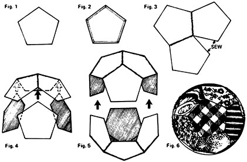

Way 'back in MOTHER NO. 22 (page 118) Sue Montgomery asked how she could recycle the debris of small scraps (especially those not suited for patchwork) that were always left over from her sewing projects. Well, here I am . . . finally getting around to writing down my solution to that problem. Just as Sue does, of course, I use up my "good" remnants doing patchwork and making stuffed animals and dolls. But the tiniest bits of surplus cloth I set aside in a special box labeled "For My Little Friends".
During my leisure hours I turn these variegated odds and ends into "cloth balls", completely safe baby toys that are tremendously popular with all the baby-through-toddler set. The fact that hardly two scraps in my box are alike is a great plus when I'm using them for cloth balls. The more variety in the textures and colors used in sewing these globes, the more they will catch a child's eye and provide him or her with an interesting plaything. Bright, stiff materials such as sailcloth, fake furs and suedes are ideal.
To make a cloth ball you'll need (in addition to your most colorful, merry remnants) a cardboard pattern for an equilateral pentagon (Fig. 1). The bigger you cut this pattern, the bigger the finished toy will be. I make mine about three inches across between the widest points. Use your pattern to cut 12 pentagons from surplus scraps, adding a 3/8-inch seam allowance on all sides as you scissor around the guide. Once you have the sections cut out, baste down the seam allowance around all five edges of each patch and then iron over the stitching so the material lies flat (Fig. 2).
You're now ready to begin constructing the cloth ball by sewing the first three pentagons together to form the top of the toy (Fig. 3). This is done very easily by placing two pentagons together and whipstitching along the common seam line, then snugly fitting the third piece against the first two. When joined like this the three pieces will form a kind of dome. Into the triangular edges under the dome, fit the pointy end of three more pentagons (Fig. 4). This completes the top half of the toy. Now repeat the same process to create the bottom of the toy. Finishing the cloth ball is just a simple matter of fitting the two halves together, matching up their jogs (Fig. 5). As you do this, remember to leave a small open space along one seam line so that you can stuff the ball with batting or-to be even more frugal-with old, cut-up nylon stockings. Then blindstitch the opening closed.
If you want this homemade toy to make a noise (and what child isn't delighted by anything that does?) you can put a big jingle bell smack in the middle of it before the final stitching. The bell won't ring, but it will rattle.
I hope this idea will help Sue make good use of her sewing leftovers . . . and encourage every seamstress to make a toy for a little friend. Several of my favorite youngsters wouldn't be parted from their rotund fabric noisemaker for anything!
|
 |
|
|